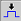
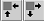
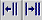

View menu
Menu item |
Action |
|---|---|
Align Display  |
Align the Error Map Tool with the pattern tool, the timing diagram and vice versa. The cursor will be placed at the same position within a test in each tool. |
Cell Size  |
Shrink or to expand the cell size of the displayed cells |
Columns  |
Decrease or increase the number of columns which are displayed |
Pins per Row |
Select the number of pins per row displayed the per pin sub folder |
Error Count |
Activate or deactivate the error count displayed the per pin sub folder |
Functional changes
- Introduced before SmarTest 6.3.2